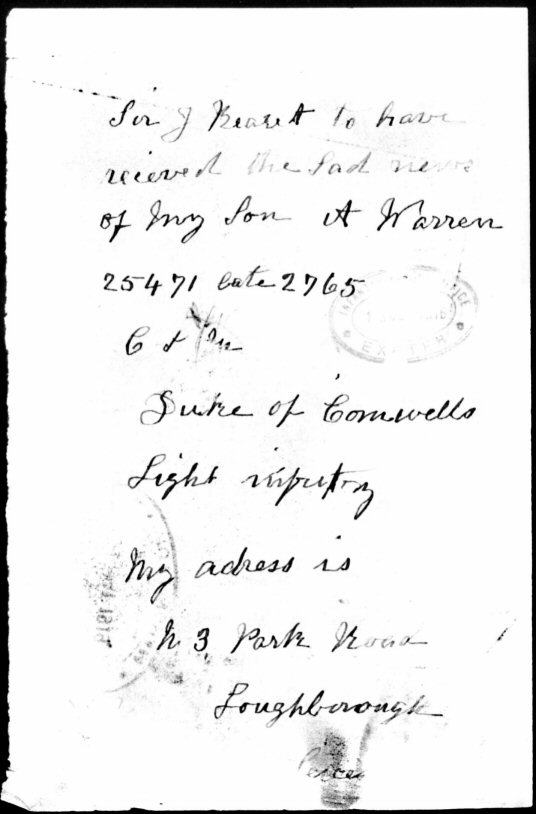
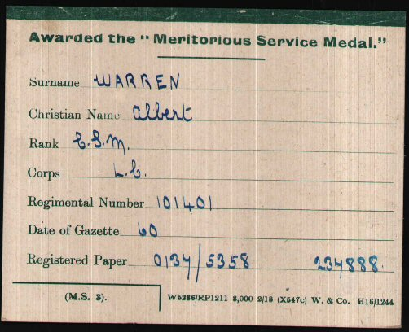

The need for labour during the First World War was one that tested military planners. The problem was partly overcome by the formation of Pioneer Battalions within some infantry regiments. These were fighting troops with special skills and equipment to carry out necessary works at the front. However there was still an urgent need for labour behind the lines and in answer to this many infantry regiments also established labour battalions and works battalions, often made up of soldiers who were too old, unfit or who had suffered injury.
It was to the 12th (Labour Battalion) Duke of Cornwall's Light Infantry that Albert found himself posted on 24 March 1916 as Company Sergeant Major 25471. The 12th was newly formed and it is possible that Albert played a part in raising the battalion from scratch and preparing them for overseas service. The battalion was earmarked for the new offensive on the Somme and they arrived in France on 6 May 1916 under the command of Lieut.-Colonel D.A. Mills, attached as Army Troops to the Fourth Army. Although a labour battalion they were entitled to most of the Somme Battle Honours, for they were at times working close to the firing line and there are frequent mentions of casualties sustained from enemy shell-fire. They were in Fricourt on 8 July 1916.

It is during this period that Albert is hospitalised for a second time during this conflict. We do not know whether this was from a wound, injury or sickness, but he spent time in hospital in Rouen before being posted back to Britain on 15 October 1916.

Albert was transferred again on 16 November 1916, this time to the 13th (Works Battalion) Devonshire Regiment as CSM 46635. The 3rd Devons was a new battalion formed in Saltash in June 1916. In April 1917 they became the 3rd Labour Battalion before becoming one of the units amalgamated into the newly formed Labour Corps.
The Labour Corps, initially a non-combatant organisation, was formed in April 1917 absorbing the earlier infantry labour battalions and labour companies from the Royal Engineers and Army Service Corps. It was an attempt to better coordinate the activities of these formerly independent units. Albert transferred to the Labour Corps as CSM 101401 and was a member of the 170th Labour Company. The 5th Infantry Labour Company, Devons, became 170 Company Labour Corps in May 1917 in France. Albert's service number is the first one in the batch for that company, confirming he was a founding member from May 1917. His membership of the 170th is also confirmed by his entry in the 1918 Absent Voters List and by his demobilisation papers in 1919.
The 170th Company served under Army Troops, Third Army in July and December 1917 and under the Canadian Corps in August 1918. It is likely that Albert's company was employed close to the front during this period and engaged in battlefield clearance from November 1918. Albert was transferred to 'Z' reserve (demobilised) in March 1919.

In July 1919 Albert was awarded the Meritorious Service Medal "in recognition of valuable service rendered with the Armies in France and Flanders."